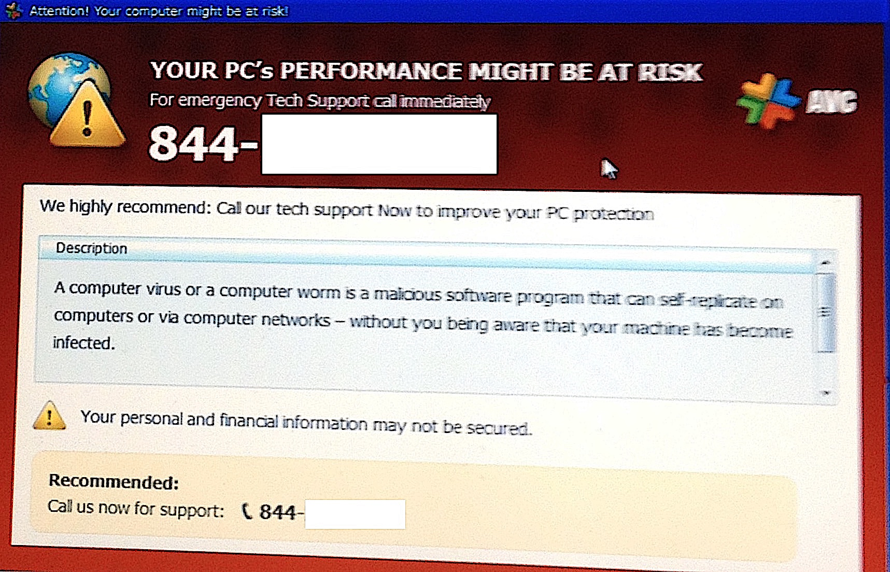

How Ponzi and pyramid schemes work — and how to spot them
Ponzi and pyramid schemes are financial fraud disguised as investment. In both, the 'returns' come not from real profit but from the money of newly recruited people; when fresh money stops coming in, the scheme collapses. In a Ponzi scheme investors are passive — a central operator promises fake returns; in a pyramid scheme the participant earns by recruiting new members. The name comes from Charles Ponzi, who promised 50% returns in the United States in 1920; the largest Ponzi in history was the Bernard Madoff case (~$65 billion). A reference — facts only.

'A completely safe 20% guaranteed monthly return' — such an offer is often not an investment but a sign of fraud. Ponzi and pyramid schemes have stripped thousands of people of their savings across many countries. The following explains how these two schemes work, how they differ, and the warning signs that reveal them — facts only.
What a Ponzi scheme is
In a Ponzi scheme a central operator collects money from people and promises them high, 'steady' returns. In reality there is no real investment or profit: the 'returns' paid to earlier investors come from the money of newly recruited investors. The source of the payout is hidden from the investor. Paying some people at first builds trust in the scheme and draws in more. When the inflow of new money slows, or many people demand their money at once, the scheme collapses.
Where the name comes from — Charles Ponzi, 1920
The scheme is named after a fraudster called Charles Ponzi, who operated in the United States in 1920. Claiming to profit from the price gap in international postal reply coupons, he promised investors a 50% return in a short time. At first he paid early investors and won their trust, but once he could not pay later investors the scheme fell apart and he was arrested. Fraud of this kind has been called a 'Ponzi scheme' ever since.

What a pyramid scheme is
In a pyramid scheme the money comes not from a real product or investment but from recruiting new members. Each participant pays an entry fee and, in turn, recruits new people and takes a cut of their fees. The structure expands level by level (in the shape of a pyramid): those at the top earn at the expense of those below. When recruiting new members becomes impossible — which is mathematically inevitable — those on the lower levels lose their money.
The key difference between the two
The key difference is in where the money is expected to come from. In a Ponzi the investor is passive: they simply put money in and wait for an 'investment return', while the source of the payout is hidden from them. In a pyramid the participant is active: to earn or to climb to a higher level they must recruit new people. What they share is one thing: in both, money circulates at the expense of newcomers, there is no real source of profit, and both collapse when new money stops.
The largest Ponzi in history — the Madoff case
The most famous and largest Ponzi scheme in the world was the case of the American Bernard (Bernie) Madoff. Through fake trade records and falsified account statements he sustained the illusion of steady returns for decades; his reputation attracted clients. The scheme was exposed in late 2008 and 2009. By estimates, more than 13,000 investors suffered losses totalling around $65 billion. Madoff was sentenced to life imprisonment.
Warning signs
Several signs warn of fraud: a guaranteed high return and the promise of a 'safe investment'; steady, identical profit even when markets fall; an unclear or secretive explanation of how the returns are generated; difficulty withdrawing your money, or pressure to 'reinvest'; an unlicensed, unregistered organisation; and pushing you to recruit more people. In a genuine investment, returns are not guaranteed and risk is always present.
How to protect yourself
The core of protection is verification: whether the organisation and the individual hold an official licence and are registered with a regulator; whether the return comes from real, lawful activity; whether the contract and documents are clear. Do not give in to haste or to 'the opportunity is running out' pressure. An offer that is 'too good to be true' usually is exactly that — not true. If in doubt, consult an independent financial adviser or the relevant state regulator.
Why this matters for Uzbekistan and the diaspora
Such schemes often spread under the guise of 'getting rich quickly', 'guaranteed returns from abroad', crypto or network marketing (MLM), and target families in the diaspora and the homeland — through trust and personal acquaintance. Knowing the logic of how a scheme works and its warning signs is the cheapest and most reliable way to protect your savings. This reference provides general knowledge and is not financial or legal advice.

Sources
- U.S. SEC Investor.gov — Ponzi schemes (definition, how they work, warning signs)
- U.S. SEC Investor.gov — Pyramid schemes (recruitment-based fraud)
- Sumsub — Ponzi scheme vs Pyramid scheme: key differences
- Wikipedia — Charles Ponzi (1920 postal reply coupon scheme, 50% returns) and Bernie Madoff ($65bn, 2008–2009)